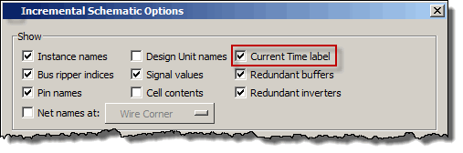
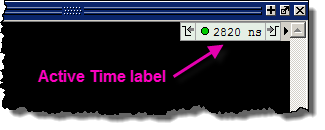

We will use
the current time set by the cursor in the embedded Wave viewer.
The Current Time Label is on by default, the following instructions
allow you to turn it off or on in the Incremental View.
Procedure
- With the
Incremental view active, select to open the Incremental
Schematic Options dialog box.
- In the Show
section of the dialog box, click the Current Time label box
so a checkmark appears, then click the OK button to close the dialog
box.
Figure 1. Selecting Current
Time Label Display Option
The Current
Time label appears in the upper right corner of Incremental view.
Figure 2. CurrentTime Label
in the Incremental View